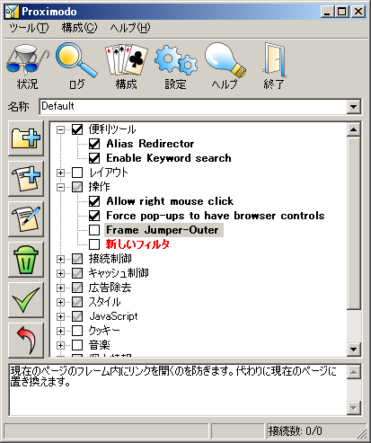
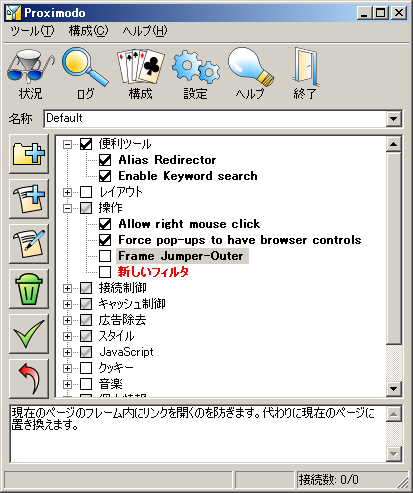
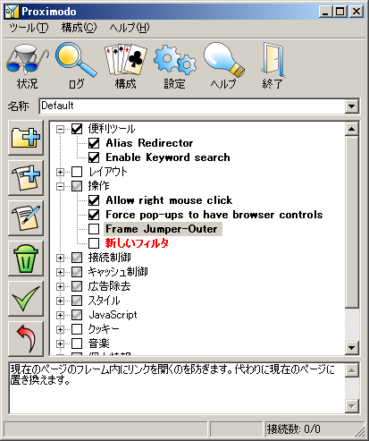
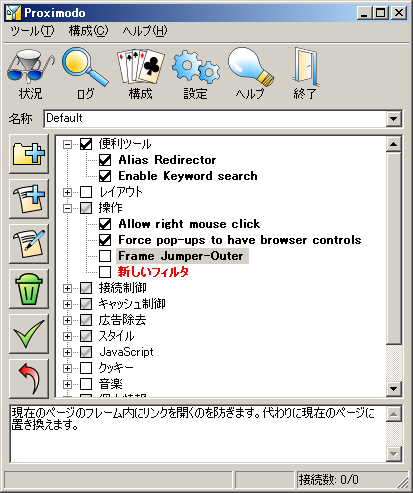

Screen Items
画面説明
Name
名称
Select a configuration by clicking on the dropdown button (the active configuration is displayed by default). Then checkboxes in the tree are updated to show which filters are active in that configuration. You can rename the configuration by typing its new name in the field then pressing [Enter].
ドロップダウンをクリックしてフィルタ構成を選択します （最初は使用中のフィルタ構成が表示されます）。ツリー内のチェックボックスで、 選択したフィルタ構成でどのフィルタが有効になっているかが示されます。 枠内をクリックして名称を書き換え、[Enter] を押せばフィルタ構成をリネーム出来ます。
Tree of filters
フィルタのツリー
The tree contains all available filters. They are organised in folders, for an easier browsing and filter checking. You can rename folders and filters by clicking twice on an item. You can drag&drop items to move them from a folder to another. Typing [Enter] opens the filter edition window, that you can keep open when you come back to the tree (the edition window will always show the selected filter).
ツリーには使用可能なフィルタが全て表示され、 閲覧やチェックを簡単に出来るようにフォルダに分類されています。 フォルダやフィルタを二回クリックすればリネーム出来ます。 ドラッグ＆ドロップで別のフォルダへ移動出来ます。 [Enter] キーでフィルタ編集ウィンドウが開きますが、 開いたままツリー表示に戻ることも出来ます （フィルタ編集ウィンドウは常に、選択したフィルタを表示します）。
Buttons
ボタン
They have exactly the same effect as menu items. See below for details.
メニュー項目と同じです。 詳細は以下を参照して下さい。
Filter Comment (bottom)
フィルタの説明（下端）
This read-only field displays the selected filter's comment, so that you can remember what it does and decide if you need it or not in the edited configuration.
選択中のフィルタの説明が表示されるので、 そのフィルタの動作を思い出したり、 現在の構成でそのフィルタを使うかどうか決定する参考に出来ます。 この画面で説明を書き換えることは出来ません。
Menu Items
メニュー項目
New Folder
フォルダ作成
Creates a new folder with a default title within the selected folder.
選択中のフォルダに新しいフォルダを作成します。 初期フォルダ名は「新しいフォルダ」になります。
New Filter
新しいフィルタ
Creates a new filter with a default title.
新しいフィルタを作成します。 初期フィルタ名は「新しいフィルタ」になります。
Edit Filter
フィルタ編集
Opens the edition window, showing the selected filter. That window can stay open while you come back to the main window.
フィルタ編集ウィンドウを開き、 選択中のフィルタを表示します。メインウィンドウの操作に戻っても、 フィルタ編集ウィンドウは開いたままにしておけます。
Check
チェック反転
Same effect as clicking on a checkbox in the tree.
ツリー内のチェックボックスをクリックするのと同じです。
Delete
削除
Deletes the selected filters or folders from the list. You can select several filters and delete them in one time.
選択中のフィルタやフォルダを一覧から削除します。 複数のフィルタを選択して一度に削除することが出来ます。
Export
エクスポート
Exports the selected filters to the clipboard. The filters are described in a specific text format that you would better not edit manually. You can use this feature to save filters in a text file or paste them in an e-mail so that you can exchange them with your friends.
選択中のフィルタをクリップボードにコピーします。 フィルタは所定のテキスト形式で出力されますが、手作業の編集には向きません。 この機能は、フィルタをテキストファイルに保存したり、 電子メールに貼り付けて友人と交換するために使えます。
Import
インポート
Imports the content of the clipboard. It should contains filters as exported with the Export menu. Filters are inserted in the current folder.
クリップボードからフィルタを読み込みます。クリップボードには、 エクスポート機能でコピーされた形式のフィルタが含まれていなければなりません。 フィルタは選択中のフォルダに挿入されます。
Import from Proxomitron
Proxomitron からインポート
Imports the content of the clipboard, with the difference that this only works if you put whole or part of a Proxomitron .cfg file in the clipboard.
クリップボードから、Proxomitron の設定ファイル （.cfg）の形式のフィルタを読み込みます。
New Config
新しい構成
Creates a new configuration with a default name that you can change at once. All checkboxes will be off.
新しいフィルタ構成を作成します。 名前はデフォルト名がつきますが変更可能です。 チェックボックスは全てオフになります。
Duplicate Config
構成の複製
Creates a new configuration with the same active filters as in the previously shown configuration.
編集中のフィルタ構成を複写して、 新しいフィルタ構成を作成します。 チェックボックスは元のフィルタ構成と同じ状態になります。
Delete Config
構成の削除
Deletes the edited configuration. Note that if you delete the last configuration, a new one will be automatically created.
編集中のフィルタ構成を削除します。 全てのフィルタ構成を削除すると、新しいフィルタ構成が自動的に作成されます。
Apply
適用
Use this when you want to commit your modifications. If you leave the screen without applying changes first, Proximodo will prompt you to apply them or lose them. Also, if you save settings using the menu, modifications are automatically applied.
変更したフィルタ構成を確定する時に使います。 適用せずに画面を切り替えようとすると、適用するか変更を破棄するか問い合わせられます。 メニューから設定の保存を行った場合は、適用したものと見なされます。
Revert
元に戻す
Cancel all pending modifications. Use it when you altered the configurations or filters unwillingly. There is current no real 'undo' option, it may be available in an upcoming version of Proximodo.
適用していない変更を元に戻します。 フィルタ構成やフィルタを間違って変更してしまった場合に使います。 「直前の状態に戻す」機能はありませんが、Proximodo の将来のバージョンでは使えるようになるかも知れません。